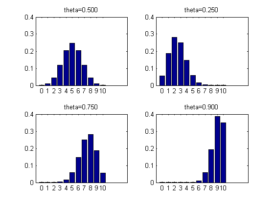

Plot Binomial Distributions as Histograms
thetas = [1/2 1/4 3/4 0.9]; figure; for i=1:4 subplot(2,2,i) theta = thetas(i); N = 10; xs = 0:N; ps = binopdf(xs, N, theta); bar(ps) set(gca,'xticklabel',xs) title(sprintf('theta=%5.3f',theta)) end printPmtkFigure('binomDistPlot');